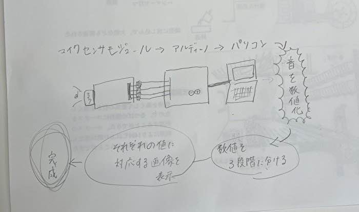

＜プロジェクトノート＞
・形のない音を光に
メンバー：きなん、あいか、そういちろう、ひかり
＜アイデアと概要＞

・音を数値化し、周波数の強さをもとに光へと変換。視覚的に音を認識できるデザイン志向の作品。
＜準備と作成プラン＞
必要部品：Arduino本体、マイクロフォン（ECM）、ADコンバーター（！結果的に使用せず！）、Arduino IDE、Processing（ソフトウェア）
＜プロジェクトプロセス＞
・メインアイデアの決定、部品の購入（5/27）
■は考えないといけないこと、疑問 ●は具体的にやること
・部品が到着。自分らのアイデアに近い製品や作品を調べ、どのように作成するか模索。■作品の正確なモデルアイデア●類似したアイデアや作品を調査（６/３）
・届いた電子部品とArduinoを使用して、ファブラボんにて、はんだこてを行う。しかし想定していた接続部分が違うことが分かり、再び必要なECMとその基盤を購入。■なにが違うを調べる。●違った点を挙げ、代替品を購入(6/10)
・再び届いた部品をArduino本体、ソフトウェアと繋げる。Arduino IDEでは音を数値化、数段階に分けた。■数字をどのようにして視覚化させるか模索●様々な出力方法をトライしてみる（6/17）
・音についてのアンケートを実施。今回のプロジェクトに反映できるよう多くに人に声をかけた。
・数値の範囲を決め、画像を選定するプログラミングを作成。しかしうまく出力されなかったり、エラーを吐いてします。■より確実に、画像を出力できるプログラミングの試行。OPEN AIなどを利用して、トライアンドエラー！！！（７/１）
・出力にあわせた画像の出力に成功！種類を増やし、画像の内容を確定。■紹介映像の作成、動作の最終確認●映像作成→担当分担。（７/８）
・ここにきてIotの未使用に気が付く。出力する写真をQRにして、インターネットを通し、LEDを光らせる事にした。QRコードの作成は達成。■光らせるLEDを装着する物体を作成●どのようにしてQRからArduinoとネットを介してどのように光を灯すか考察（７/１５）
・LEDを差し込む物体を粘土で作成、３Dスキャナーでスキャンし、３Dプリンターで出力。QRからdflinkを介してLEDを光らせるコードが完成。一通りが安定して動くようになった。最後に期日までに動画の作成を計画。（７/１９）
完成動画↓